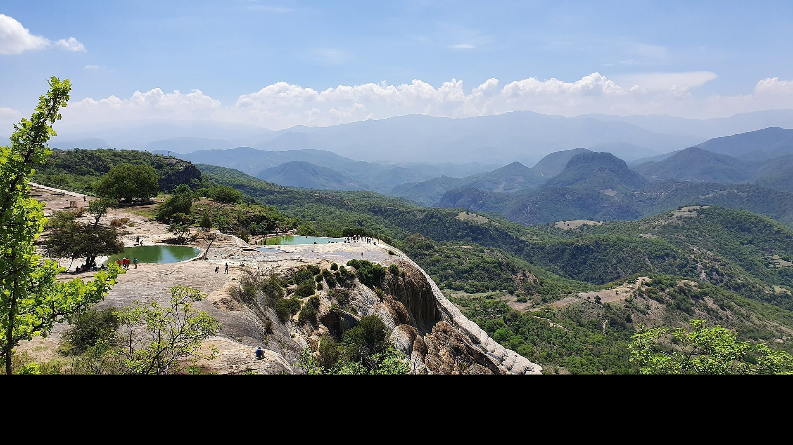
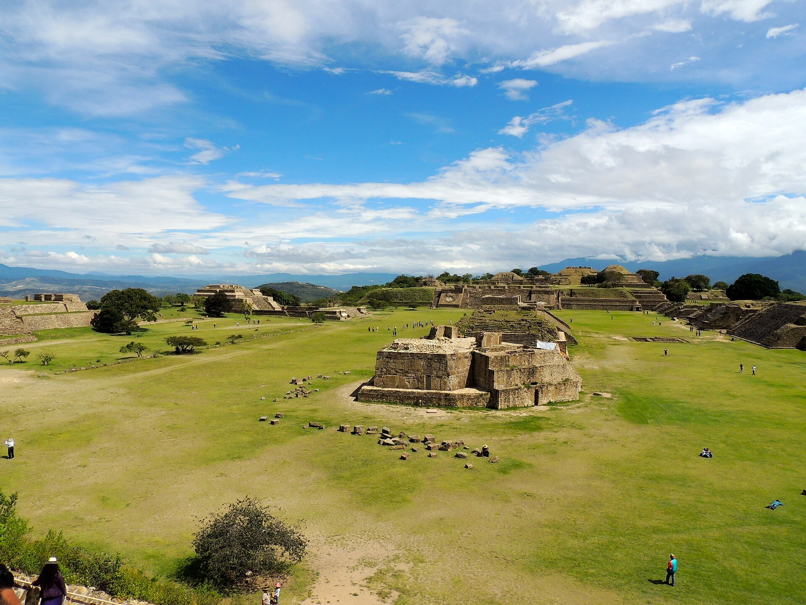
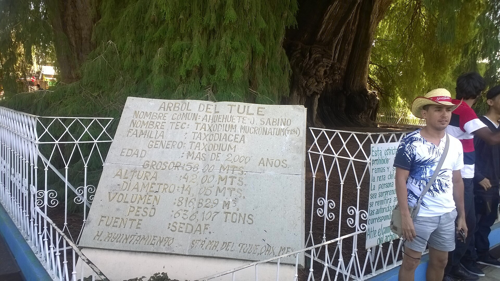
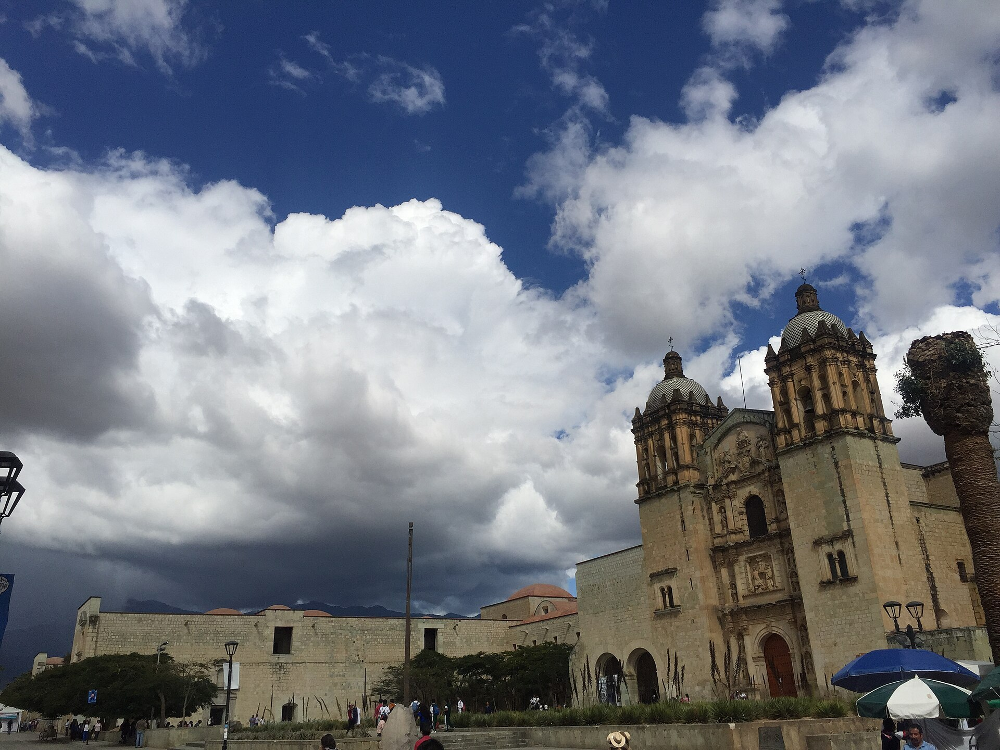
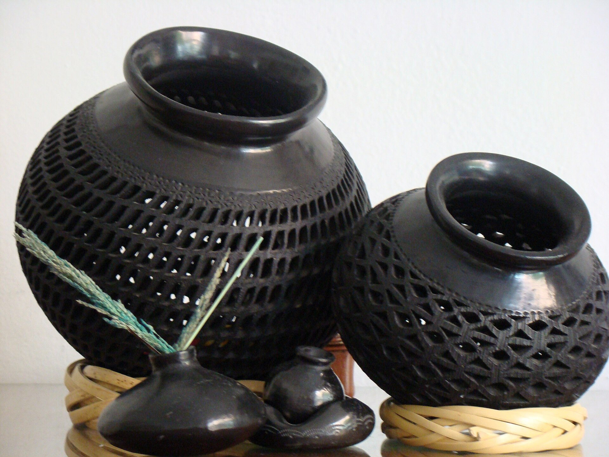
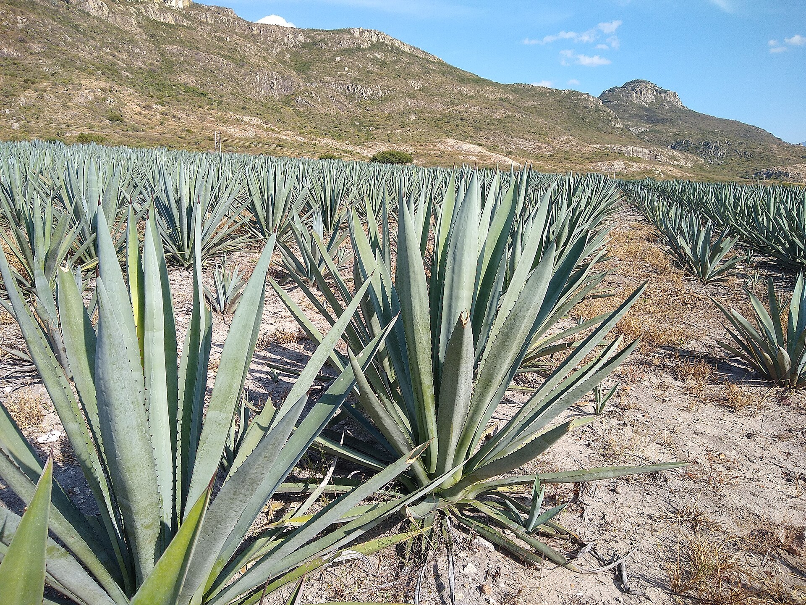
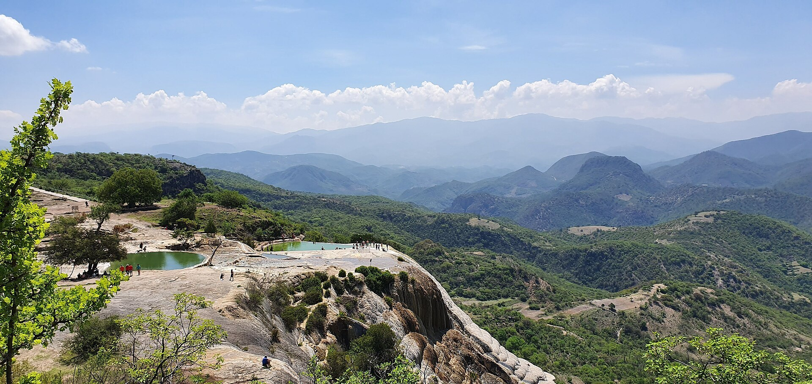
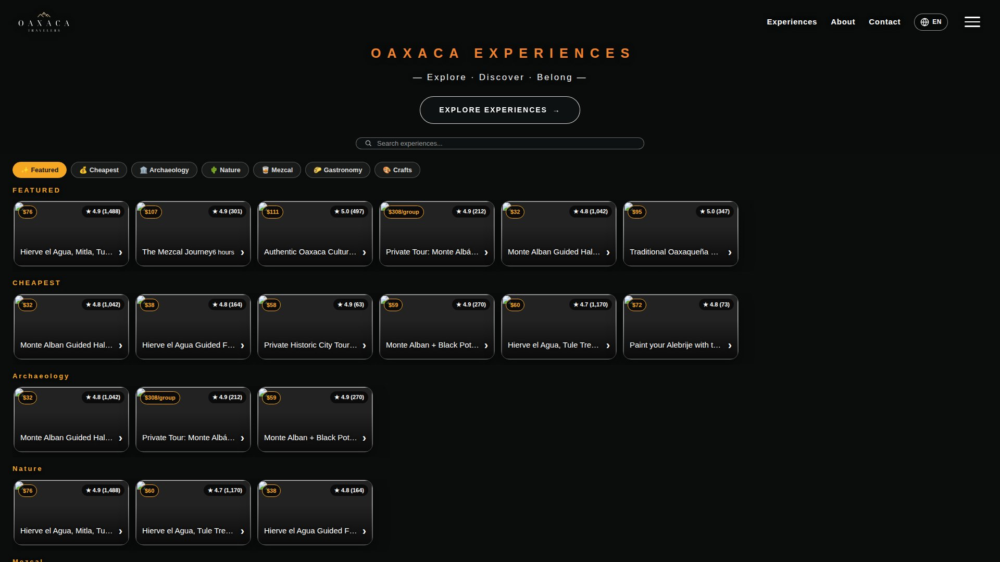

Archaeology
Monte Albán Guided Half-Day Tour
The great Zapotec capital above Oaxaca City, with a certified guide.
Oaxaca Travelers is the experiences platform for Oaxaca: the Zapotec capital of Monte Albán, the petrified waterfalls of Hierve el Agua, the mezcal route, the food and the crafts — one catalog, prices always visible.

Five thousand years of history in one valley: temples, giant trees, stone mosaics and living traditions.





The most-booked routes on the platform. Every experience shows its price and its rating before you book — the booking is completed securely on Viator.
Archaeology
The great Zapotec capital above Oaxaca City, with a certified guide.

Nature
The classic full-day route: petrified waterfalls, Mitla, the Tule tree and a mezcal tasting.
Mezcal
Six hours in Santiago Matatlán, world capital of mezcal, with the families who make it.
Nature
A full day at the mineral springs and petrified waterfalls, at an easy pace.
Prices in USD per person via Viator and may vary by date. The private Monte Albán tour runs $308 per group. The full catalog — 12 experiences — lives at oaxacatravelers.com.
The Oaxaca edition of the same platform as Las Vegas Travelers: we curate and present; Viator runs the booking.
Archaeology, nature, mezcal, gastronomy and crafts — five shelves, the best-rated experiences in each, no filler.
Certified guides and family workshops: Matatlán mezcal makers, Coyotepec potters, Teotitlán weavers.
Oaxaca Travelers is a Viator affiliate showcase: payment, confirmation and cancellation happen on Viator, with its guarantees.

The platform is open in English, Spanish and Chinese, with 12 experiences and departures from Oaxaca City.
Visit oaxacatravelers.comDestination photography via Wikimedia Commons. Tour data and prices from the live Oaxaca Travelers catalog (Viator).